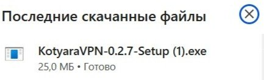

Компьютер на Windows
Устанавливается как обычная программа. Понадобится код приглашения — 11 символов с дефисом, — если вы ставите VPN впервые. Если аккаунт уже есть, просто введите свой логин и пароль.
Скачать установщик Setup.exe · Windows 10 и 11Скачайте установщик
Нажмите кнопку выше — файл сразу сохранится в папку «Загрузки». Кнопка всегда отдаёт самую новую версию: номер в имени файла может быть любой, это нормально.
Браузер покажет загрузку в углу — например, в списке «Последние скачанные файлы». Когда рядом появится слово «Готово», файл скачан.

Не скачивается? Откройте страницу всех файлов и нажмите файл с окончанием -Setup.exe.
Если Windows предупредил — нажмите «Подробнее»
Когда откроете скачанный файл, может появиться синее окно «Система Windows защитила ваш компьютер». Это не вирус и не ошибка: так Windows встречает любую новую программу, которую видит впервые.
Нажмите маленькую ссылку «Подробнее» под текстом — на неё показывает красная стрелка.

Нажмите «Выполнить в любом случае»
После «Подробнее» появится название файла и кнопка «Выполнить в любом случае» — она слева, рядом с «Не выполнять». Нажимайте её.
Так вы разрешаете запуск нашей программы. Пароль администратора Windows здесь не спросит.

Пройдите установку
Откроется окно «Welcome to Kotyara VPN Setup». Нажимайте «Next» (Далее), потом «Install» (Установить) и в конце «Finish» (Готово). Ничего менять не нужно — просто три раза «дальше».
Через минуту на рабочем столе появится значок Kotyara VPN.

Войдите — или зарегистрируйтесь по коду
Откройте Kotyara VPN. Если аккаунт уже есть, введите логин и пароль и нажмите «Войти».
Если вы здесь впервые — нажмите внизу «Впервые здесь? У меня есть код приглашения». Откроется регистрация: введите код приглашения (11 символов с дефисом), придумайте имя и пароль не короче 12 символов — и повторите пароль. Затем «Создать аккаунт».

Запомните пароль
Он понадобится, чтобы войти на телефоне или если переустановите программу.
Нажмите большую кнопку с щитом
На главном экране под котом есть круглая зелёная кнопка с щитом и подписью «Нажмите, чтобы подключиться». Нажмите её.
При первом подключении Windows спросит разрешение — нажмите «Да». Приложение на секунду закроется и откроется снова уже с правами администратора и сразу подключится. Это нужно один раз.
Подождите 2–5 секунд: сверху надпись сменится на «Подключено» — VPN работает.

Проверка
Откройте любой сайт — если он открывается, всё работает. Кнопка подключения остаётся включённой, пока вы сами не отключите VPN. Программа обновляется сама.
В приложении есть галочка «Подключать при запуске» — включите её, и VPN будет включаться вместе с компьютером, без лишних нажатий.
На компьютере и на телефоне можно войти в один аккаунт — каждое устройство получит своё подключение, и они не будут мешать друг другу.
Если что-то пошло не так
- Установщик не запускается — нажмите на файл правой кнопкой → «Запуск от имени администратора».
- Windows не даёт запустить — «Подробнее» → «Выполнить в любом случае». Файл подписан, это обычное предупреждение для новых программ.
- Код приглашения не принимается — проверьте дефис и что код ещё не использован: один код подходит только одному человеку.
- Не подключается — проверьте интернет, нажмите «Отключить», затем «Подключиться» ещё раз. Если не помогло, откройте в приложении «Диагностика» и пришлите нам отчёт.
Больше подсказок — на странице «Если что-то не работает».